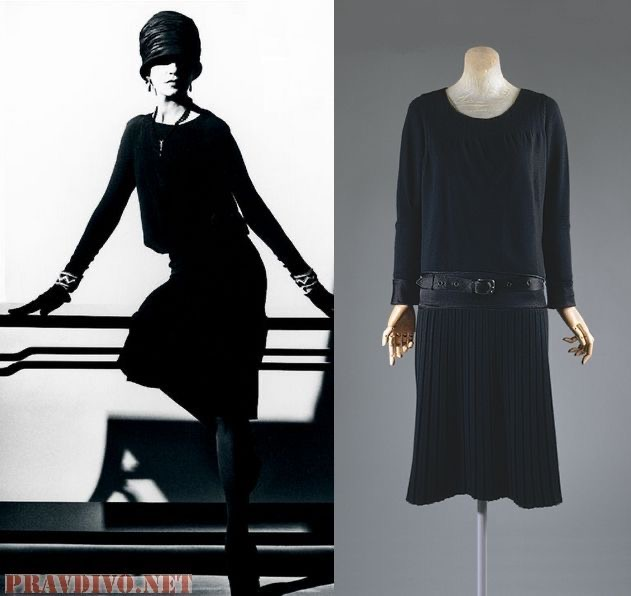
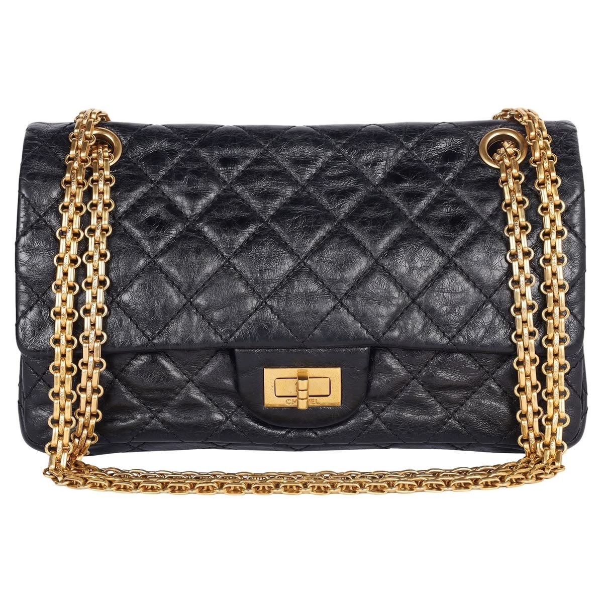
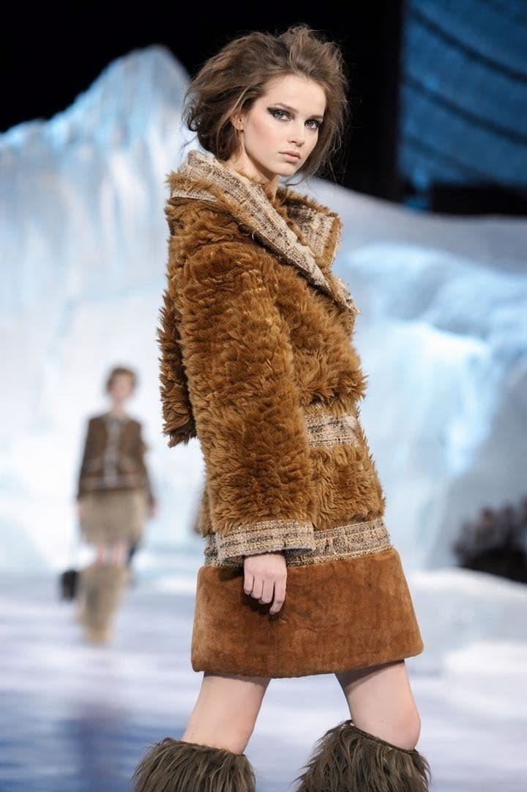

Cuando piensas en una marca de lujo que inspire elegancia, ¿en cuál piensas? Seguramente en Chanel. Todo el mundo conoce la Maison, incluso aquellos a los que no les interesa este mundo; para mí Chanel es lujo atemporal y esta es su historia. La maison se fundó en 1910 en el 21 de la rue Cambon, en París, y su fundadora, conocida por todos, fue Coco Chanel (Gabrielle Chanel).
Gabrielle hizo que se acabasen los corsés y empezó la era comfy para las mujeres. Para ella, la moda no estaba hecha para señoras aburridas sin nada que hacer, sino para mujeres activas. Ella llevaba pantalones, considerados masculinos en la época, y pregonaba la idea del “silent luxury” que muchas hoy llevan por bandera.
Usaba colores como el gris o el azul oscuro e influencias de la hípica. Fue la pionera en utilizar las rayas horizontales y los jerséis de cuello alto. En 1917, la camiseta marinera fue su prenda más popular. Ante la escasez de telas por la guerra, usó el patrón de los marineros franceses: 21 rayas, una por cada batalla ganada de Napoleón.
La mayoría tenemos un vestido negro básico, ese must al que siempre recurrimos. Esto también fue influencia de Chanel. En 1926, Vogue USA presentó su vestido de crepé de China como el “Ford de Chanel”, por ser accesible e imprescindible. Básicamente, inventó el uniforme de las fashion girlies.

The Little Black Dress (1926)Como decía Miranda Priestly, tu vestido no es solo negro; es “le petite robe noire”. Las chicas dark debemos agradecerle a Coco por usar este color para algo que no fuese el luto. En 1939, con la Guerra Mundial, la maison cerró y se centró en su perfume: el Nº5 de Chanel.
Surgió de su encuentro con Ernest Beaux. Gabrielle buscaba el aroma de su flor favorita, la camelia. Aunque no tiene olor, para ella significaba belleza pura y sensualidad. De todas las muestras, eligió la número 5. Durante la guerra, se hospedó en el Ritz, explicando que “no es momento de vestir a mujeres cuyos maridos se enfrentan a la muerte”.
En el 54 volvió con el traje tweed, adorado por Marilyn Monroe y Jackie Kennedy. Sí, ella fue la culpable de que Zara lo reversione mil veces y de que sigas buscándolo en Vinted a día de hoy.
En 1955, cansada de perder los bolsos de mano, les puso una cadena. Así nació el 2.55. En el 57 llegaron los zapatos ballet flat bicolor.

El bolso 2.55: Funcionalidad y EstiloGabrielle murió en 1971, dejando un vacío hasta 1983, cuando Karl Lagerfeld entró con carta blanca. Él convirtió la firma en un fenómeno mundial, modernizando los bestsellers y creando el icónico chain dress de 1992 e introduciendo el denim.
Sus desfiles fueron legendarios, como el del iceberg (2010/11) o el de la estación central de Nueva York. Karl estuvo hasta su muerte en 2019, sucedido por Virginie Viard, su “brazo derecho”, quien priorizó los actos sobre las palabras.

Chanel Fall/Winter 2010/11Finalmente, Matthieu Blazy tomó el relevo, aportando su detalle por las telas y su visión minimalista. Al igual que Coco, Blazy opta por la simplicidad y la funcionalidad que definen el lujo real.